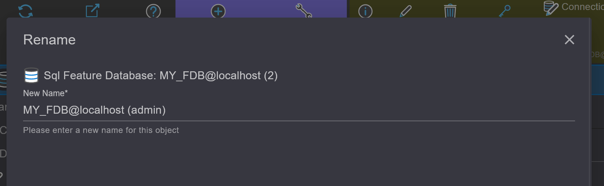
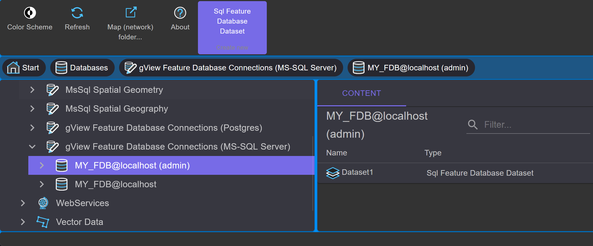
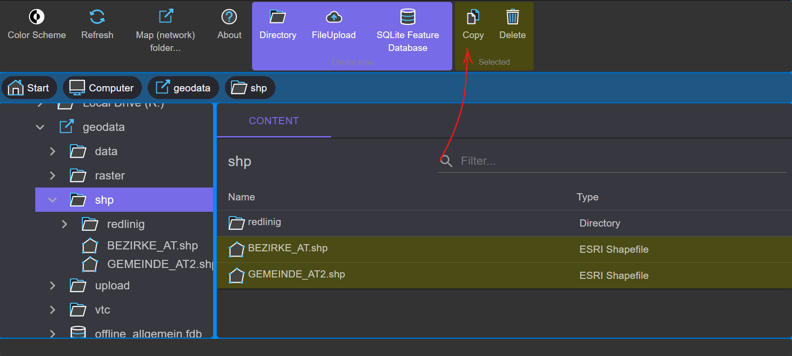
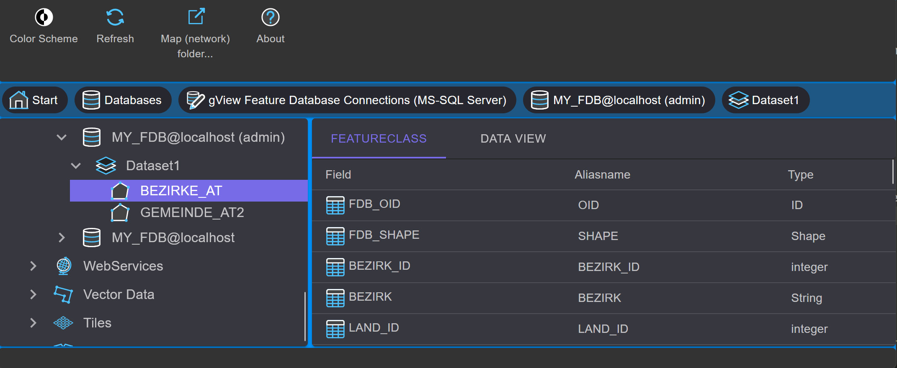

Creating an MS SQL Feature Database¶
This database is a proprietary format and can only be used with gView GIS. However, the advantage is the high performance with large data volumes. Additionally, this format allows for the creation and management of image catalogs in a comfortable graphical interface. A prerequisite for creating a database is MS SQLServer 2008 or higher. If the free Express version of MS SQL is used, the corresponding limitations of the server apply (max. 4GB per database, etc.). However, these restrictions do not limit the Feature Database functionality.
Note
The method shown here refers to a gView Feature Database in SQLServer.
The creation of a gView Feature Database in Postgres is analogous.
To create a gView Feature Database based on SQLite, first navigate to the location in the filesystem where the database
should be created. In the Context Menu, you can then select Create New: SQLite Feature Database.
To create a new Feature Database, select the node Database / gView Feature Database Connections (MS-SQL Server) in the tree view:
In the toolbar, in the Context Block Create new, the tool SQL Server Feature Database is offered. Clicking on it opens the
following dialog:

Here, set up the connection to the SQL Server instance. The connection type specifies whether to log in via Windows authentication or using a username and password. The database name completes the properties of the new database.
After confirmation with OK, the database is created with all necessary tables. If the creation is successful, the Data Explorer
shows the new database icon in the Contents area:

The icons in the Contents area are always opened with a double click. You can also create a connection icon to an
existing Feature Database this way. Simply double-click the icon Create New Connection…

This way, more icons for the sample database with administrator rights can be created:

Using the context toolbar of an icon, it can finally be renamed:
The next step is to create a dataset for geospatial data. Datasets are collections of feature classes that possess similar properties. For example, all classes belonging to the cadastral system can be placed in a dataset labeled CADASTRE.
Note
All feature classes within a dataset use the same spatial reference system! If data is in different reference systems, the feature classes must be divided into multiple datasets. A feature class name can only occur once in a database.
To create a new dataset, double-click on the database icon
(MY_FDB@localhost (admin)) in the Contents area. Since no datasets exist yet, only
an empty area appears. In the Context Block Create new in the toolbar, a
tool SQL Feature Database Dataset is offered, which opens the following dialog:
You can name it Dataset1. The type remains Feature Dataset.
This means that vector data for all geometry types (point, line,
area) can be stored in this dataset. The type Image Dataset is intended for creating
image catalogs and will be discussed in the next section.
The second tab of the dialog specifies the spatial reference system for the dataset. As mentioned above, the reference system can only be determined at this level. All feature classes in a dataset inherit this property.
A spatial reference system always consists of two parts (coordinate system and
geodetic datum), although the second part can theoretically be omitted. However, no datum transition is applied during projection. With the
Select, you can choose from predefined systems:

To narrow down the list, you can enter a search term (e.g., Austria, EPSG code). Clicking on the desired coordinate system closes the dialog. The procedure for the geodetic datum is identical. In some projections, the datum is already included. After making a selection, the dialog looks approximately like this:

The third tab Spatial Index allows you to create a prototype for the spatial
index of the dataset. Whenever a new feature class is created, this
prototype is suggested. However, since a separate index can be created for each feature class later,
the provision of this prototype is optional.

After confirming the dialog, the new Dataset is created:
The context tools of the dataset icon can be used to rename it. It is also possible to change the parameters of the spatial reference system afterwards.
Note
If the spatial reference system is changed retrospectively, the feature classes in the dataset are not reprojected. This means that the coordinates of the features remain the same. Only the projection parameters inherited from the dataset are changed.
In the next step, data from an ESRI Shapefile should be copied into the SQL Feature Database. To do this, navigate through the tree view to the directory where the shape data is located.
First, select the desired files. As usual, multiple files can be marked using the Shift or
Control key. In the context area of the toolbar, the Copy button appears. Clicking on
the button copies the data to the clipboard.
Note
The data is not copied to the Windows clipboard but to the gView.DataExplorer clipboard of the current session. Data cannot be copied to other programs. It is also not possible to copy from one gView.DataExplorer window to another.
Navigate back to the dataset created earlier; the Contents area of the dataset is still empty.
After clicking the Paste button in the context area of the toolbar, the following dialog appears:

The copying process is started by clicking the Start button:

Once the copying process is successfully completed, the dialog can be closed with Close,
and the new Feature Classes are displayed.
Now double-click on one of the newly created Feature Class icons. In the Contents view, the fields with their respective field types appear:
In addition to the FeatureClass tab, another tab appears: Data View.
This is used to display the content of the feature classes. Both geometry and data are displayed:

Navigation in the map occurs as in gView.Carto by dragging with the mouse button (moving) or using the mouse wheel (zooming). The table area can be enlarged or reduced with the arrow keys.
In addition to importing data into a SQL Feature Database, this data can also be exported. To do this, proceed in the opposite way as described above. First, mark and copy the feature classes. Then navigate to the destination folder and paste them there. When copying data back into the file system, the output format must be specified in the copy dialog:

Besides ESRI Shape file, the OGC GML format is also possible. Both formats are readable by most GIS systems and are therefore very suitable for exchanging data between different systems.